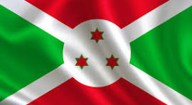
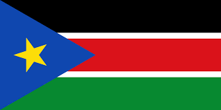
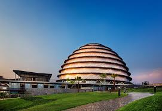
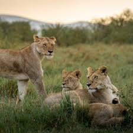
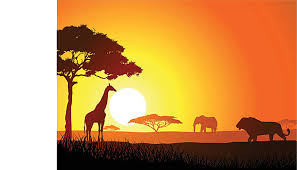
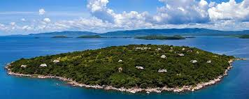
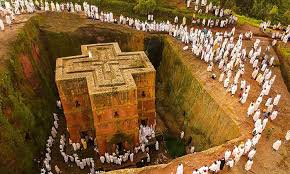
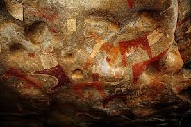
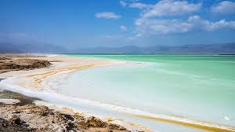

Day 3: Exploring East Africa
Introduction to East Africa
East Africa is a beautiful part of Africa with many different countries. It's known for its amazing landscapes, from tall mountains to deep lakes. People in East Africa have rich cultures and histories that make this region very special.
How Many Countries in East Africa?
There are 13 countries in East Africa. Some of the most well-known countries include Kenya, Tanzania, and Uganda. Each country has its own unique culture and attractions.
What is the Biggest Country in East Africa?
The biggest country in East Africa by area is Tanzania. It's known for its large national parks and the famous Mount Kilimanjaro, the highest mountain in Africa.
Main Touristic Areas in East Africa
East Africa is famous for its wildlife and natural beauty. Here are some popular touristic areas:
- Serengeti National Park (Tanzania): Known for the Great Migration of wildebeest.
- Mount Kilimanjaro (Tanzania): The tallest mountain in Africa.
- Maasai Mara National Reserve (Kenya): Famous for its lions and other wildlife.
- Lake Victoria: The largest lake in Africa, shared by Kenya, Uganda, and Tanzania.
Countries, Their Flags, and Capital Cities in East Africa
| Country | Flag | Capital City |
|---|---|---|
| Kenya |  |
Nairobi |
| Tanzania |  |
Dodoma |
| Uganda |  |
Kampala |
| Rwanda |  |
Kigali |
| Burundi |  | Gitega |
| South Sudan |  | Juba |
| Ethiopia |  |
Addis Ababa |
| Somalia |  |
Mogadishu |
| Eritrea |  |
Asmara |
| Djibouti |  |
Djibouti City |
| Comoros |  |
Moroni |
| Seychelles |  |
Victoria |
| Madagascar |  |
Antananarivo |
Culture and Languages
East Africa is rich in culture and languages. Each country has its own traditions, music, dances, and festivals. Swahili is a common language spoken in many East African countries, especially in Kenya and Tanzania. People in East Africa celebrate many colorful festivals and have unique traditional clothing.
Rwanda
Introduction: Rwanda is known as the "Land of a Thousand Hills" due to its mountainous terrain. It is a country with a tragic past but has transformed remarkably in recent years.
Military Strength: Rwanda has a well-trained and disciplined military, playing a significant role in peacekeeping missions across Africa, including in countries like Central African Republic, Mozambique, Sudan, and in UN missions.
Notable Figures: HE Paul Kagame, the President of Rwanda, is widely praised for his leadership in rebuilding the country and promoting economic development and security.
Key Attractions:
- Kigali Convention Centre: A modern architectural marvel and a hub for international conferences.
- Nyungwe Forest National Park: A large tract of mountain rainforest, home to diverse wildlife, including chimpanzees.
- Amahoro National Stadium: The largest stadium in Rwanda, a venue for major sports and cultural events.
KIGALI: Kigali is the capital city of Rwanda, is one of the cleanest and safest cities in Africa.

Kenya
Kenya:
Kenya is known for its diverse landscapes and rich cultural heritage. It is a major tourist destination with iconic wildlife reserves and beautiful beaches.
Key Attractions:
- Maasai Mara: Renowned for its lion population and annual wildebeest migration.
- Mount Kenya: The second-highest peak in Africa, ideal for trekking.
KENYA: Kenya's capital city is called Nairobi, is a vibrant city that serves as a gateway to the country’s natural wonders.

Tanzania
TANZANIA:
Tanzania is home to some of Africa’s most famous national parks and Mount Kilimanjaro, the continent’s highest peak.
Key Attractions:
- Serengeti National Park: Famous for the Great Migration of wildebeest and zebras.
- Zanzibar: An exotic island with beautiful beaches and rich history.
Notes: Dodoma, the capital, is the political hub, while Dar es Salaam remains the major economic center.
Uganda
Introduction: Uganda is known for its stunning landscapes, including the source of the Nile River and mountain gorillas.
Key Attractions:
- Bwindi Impenetrable Forest: A sanctuary for endangered mountain gorillas.
- Lake Victoria: The largest lake in Africa, shared with neighboring countries.
Notes: Kampala, the capital, is the cultural and political heart of Uganda.


Burundi
Introduction: Burundi is a small country with a rich cultural heritage, beautiful landscapes, and a tumultuous history.
Key Attractions:
- Lake Tanganyika: The world’s second-deepest lake, ideal for fishing and exploring.
- Kibira National Park: A protected area home to various wildlife species.
Notes: Gitega, the new capital, was designated to promote decentralization and national unity.
South Sudan
Introduction: South Sudan, the world’s youngest nation, gained independence in 2011. It is rich in cultural diversity and natural resources.
Key Attractions:
- Sudd Swamp: One of the largest wetlands in the world, crucial for biodiversity.
- Nimule National Park: Offers a unique wildlife experience along the White Nile.
Notes: Juba, the capital, is a rapidly growing city, despite the ongoing challenges of nation-building.

Ethiopia
Introduction: Ethiopia is one of the oldest nations in the world, with a rich history and diverse cultures. It’s known for its ancient monuments and rugged landscapes.
Key Attractions:
- Lalibela: Famous for its rock-hewn churches, a UNESCO World Heritage site.
- Simien Mountains: A breathtaking range that offers trekking and wildlife viewing.
Notes: Addis Ababa, the capital, is the political and diplomatic hub of Africa, hosting the African Union’s headquarters.

Somalia
Introduction: Somalia, located on the Horn of Africa, is known for its long coastline, rich maritime history, and resilient people.
Key Attractions:
- Laas Geel: Ancient rock art dating back thousands of years.
- Mogadishu: The capital, with its historic sites and beautiful beaches.
Notes: Despite its challenges, Somalia has a vibrant culture and a strong sense of community.
Eritrea
Introduction: Eritrea, located in the Horn of Africa, has a unique blend of African and Mediterranean influences.
Key Attractions:
- Asmara: The capital, known for its well-preserved colonial Italian architecture.
- Dahlak Archipelago: A group of islands in the Red Sea, ideal for diving and snorkeling.
Notes: Eritrea has a long coastline along the Red Sea, making it strategically significant.


Djibouti
Introduction: Djibouti is a small but strategically important country located at the crossroads of Africa and the Middle East.
Key Attractions:
- Lake Assal: The lowest point in Africa and one of the saltiest bodies of water in the world.
- Gulf of Tadjoura: Known for its coral reefs and marine life.
Notes: Djibouti City, the capital, is a hub for international shipping and military presence.
Comoros
Introduction: The Comoros is a small island nation in the Indian Ocean, known for its beautiful beaches, volcanic mountains, and rich culture.
Key Attractions:
- Mount Karthala: An active volcano and the highest point in the Comoros.
- Mitsamiouli Beach: A pristine beach popular for swimming and snorkeling.
Notes: Moroni, the capital, is a charming city with a mix of African, Arab, and French influences.

Seychelles
Introduction: Seychelles is an archipelago of 115 islands in the Indian Ocean, known for its beautiful beaches, coral reefs, and nature reserves.
Key Attractions:
- Anse Source d'Argent: One of the most photographed beaches in the world.
- Vallée de Mai: A UNESCO World Heritage site home to the famous Coco de Mer palm.
Notes: Victoria, the capital, is one of the smallest capitals in the world, offering a relaxed and picturesque setting.


Madagascar
Introduction: Madagascar is the fourth largest island in the world, known for its unique wildlife and biodiversity.
Key Attractions:
- Avenue of the Baobabs: A famous group of ancient baobab trees.
- Andasibe-Mantadia National Park: Home to various lemur species and other endemic wildlife.
Notes: Antananarivo, the capital, is the political and cultural center of Madagascar.